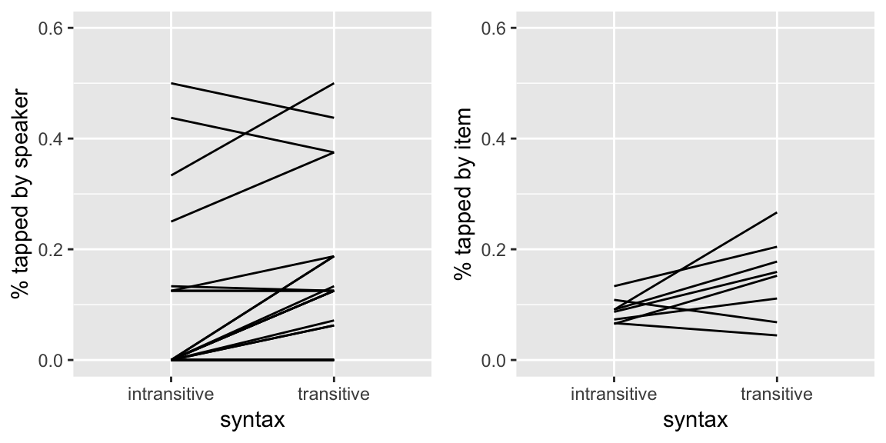
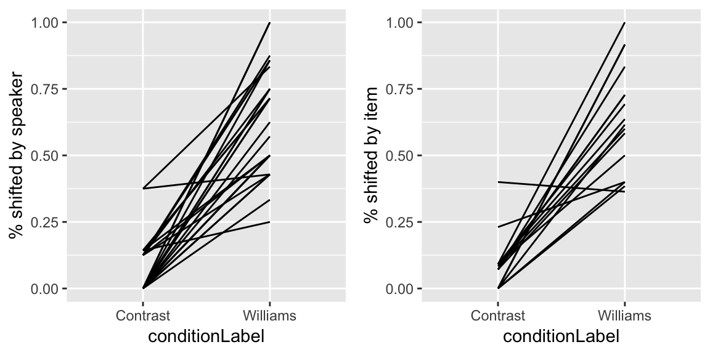
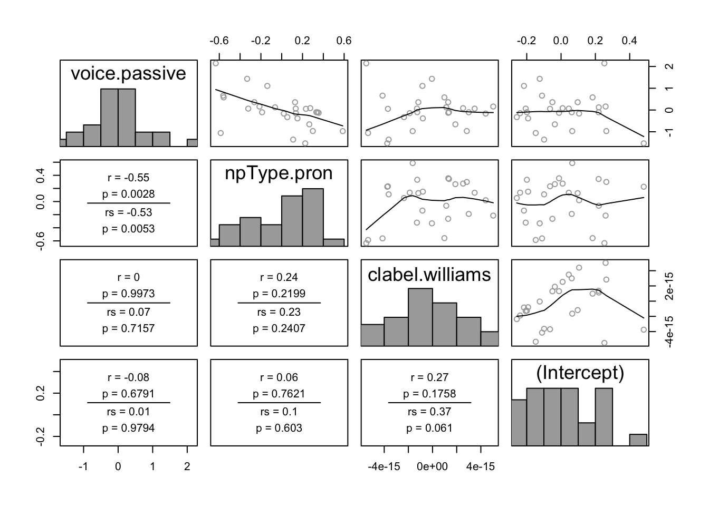
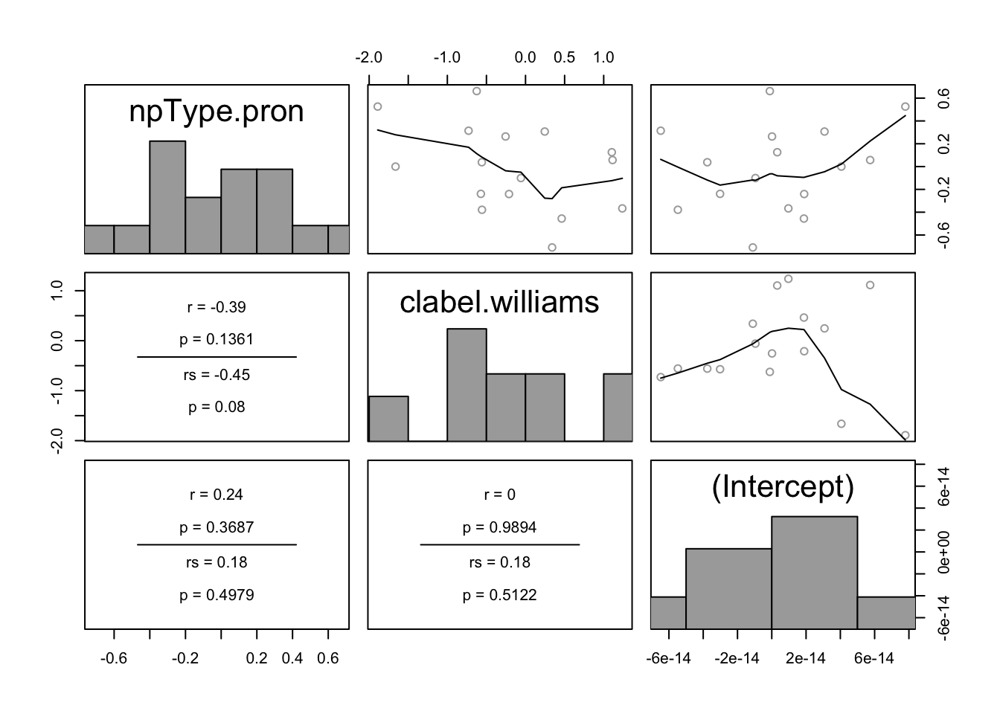
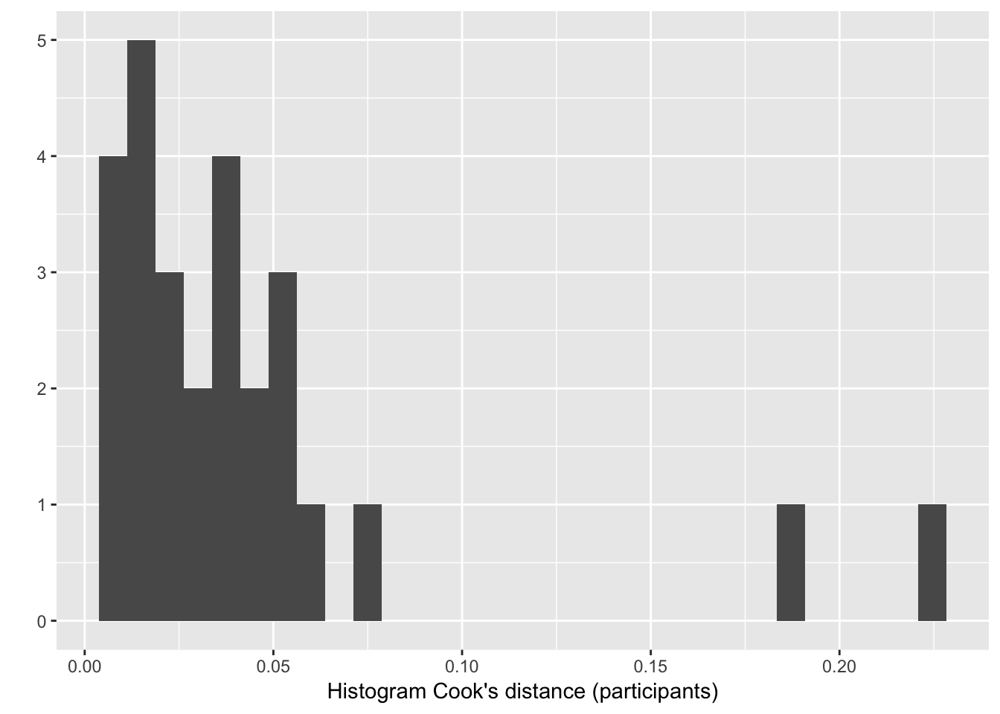
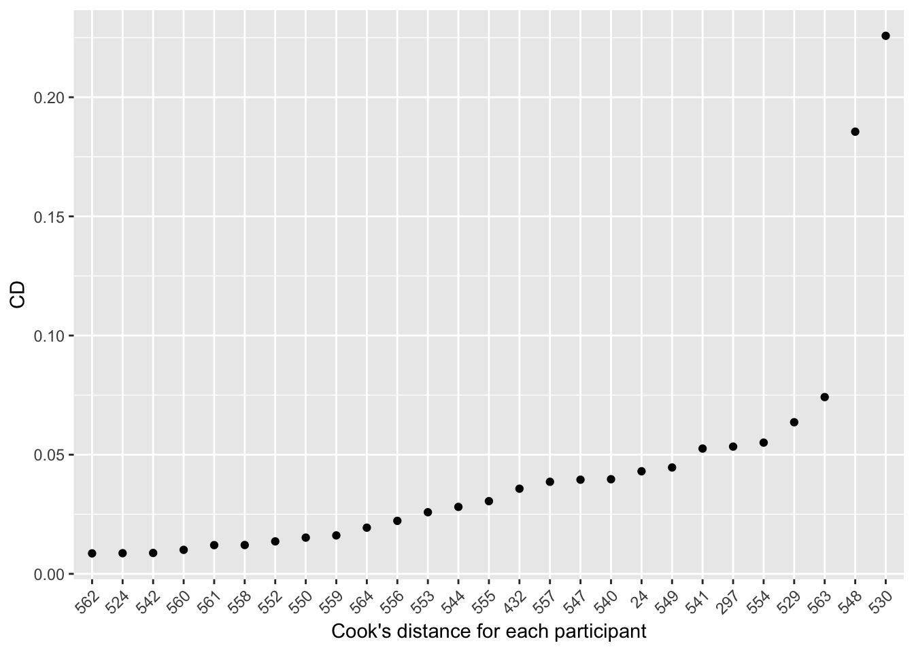

Chapter 8 Mixed-Effects Logistic Regressions
Preliminary code
library(gridExtra) # for grid.arrange() to print plots side-by-side
library(dplyr)
library(ggplot2)
library(arm)
library(languageR)
library(influence.ME)
tapped <- read.delim("datasets/tapped2.txt")
## there is some missing data for 'tapped' variable -- exclude to avoid warnings later
tapped <- filter(tapped, !is.na(tapped))
tapped <- mutate(tapped, tapped.num=as.numeric(tapped)-1)
tapped$released <- factor(tapped$released, levels=c("Unreleased", "Released"))
tapped <- mutate(tapped,
syntax.trans = arm::rescale(syntax),
speechrate.slow = arm::rescale(speechrate)
)
givenness <- read.csv("datasets/givenness2.csv")
alternatives <- read.delim("datasets/alternatives.txt")
givenness <- mutate(givenness,
conditionLabel.williams = arm::rescale(conditionLabel),
clabel.williams = arm::rescale(conditionLabel),
npType.pronoun = arm::rescale(npType),
npType.pron = arm::rescale(npType),
voice.passive = arm::rescale(voice),
order.std = arm::rescale(order),
stressshift.num = (as.numeric(stressshift) - 1)
)
## function for computing accuracy of a logistic regression model
## (on the dataset used to fit the model)
## lrMod = fitted model
## responseVar = name of response variable for lrMod
## use.ranef = TRUE or FALSE (should we predict for grouping factor levels in this data, or for an "average" level? TRUE/FALSE)
##
## adapted from: https://www.r-bloggers.com/evaluating-logistic-regression-models/
lrAcc <- function(lrMod, responseVar, use.ranef=TRUE){
## convert response variable into a factor if it's not one
if(!is.factor(model.frame(lrMod)[,responseVar])){
model.frame(lrMod)[,responseVar] <- as.factor(model.frame(lrMod)[,responseVar])
}
## model predictions in log-odds
if(use.ranef){
preds = predict(lrMod, newdata=model.frame(lrMod))
} else{
## predict for average participant/item/other
preds = predict(lrMod, newdata=model.frame(lrMod), re.form=NA)
}
## transform to 0/1 prediction
preds <- ((sign(preds)/2)+0.5)
## response variable values, transformed to 0/1
respVarValues <- model.frame(lrMod)[,responseVar]
## if the response is already 0/1, just use it
if(is.numeric(respVarValues)){
y <- respVarValues
} else{
## otherwise, transform to 0/1
y <- (as.numeric(model.frame(lrMod)[,responseVar])-1)
}
## how often is prediction the same as the actual response
acc <- sum(preds==y)/length(preds)
return(acc)
}
## baseline accuracy for a logisitic regression model lrMod
## with a given response variable
baselineAcc <- function(lrMod, responseVar){
response <- model.frame(lrMod)[,responseVar]
tab <- table(response)
return(max(tab)/sum(tab))
}Note: Answers to questions/exercises not listed in text are in Solutions
8.1 Preliminaries
Mixed-effects logistic regression (MELR) is to logistic regression as linear mixed-effects models are to linear regression. MELRs combine pieces we have seen previously:
Logistic regression
Binary response \(Y\)
- Ex:
tapped= 1 or 0, in thetappingdataset.
- Ex:
Model log-odds that \(Y\) happens.
Fixed effects
“Predictors” from logistic regression, now called “fixed effects”
- Ex:
speechrate,vowelduration,syntax
- Ex:
Capture effect of each predictor across participants/items.
Random effects
Capture by-participant/item variability
Ex: in overall tapping rate (“random intercept”), in the effect of a predictor across participants (“random slope”) or items.
Remember that logistic regression models the log-odds of a “hit” (\(Y=1\)) as a function of predictors. Not the number of hits, the probability of a hit, or anything else.
Some additional readings on MELR models can be found in Gelman and Hill (2007 ch. 14), (Jaeger 2008), Johnson (2008 ch. 7.4).
8.1.1 Motivation
To get a sense of what kind of variability is captured by the random effects in MELR models, we can examine by-participant and by-item variability in two datasets we modeled using logistic regression(TODO VANNA: link?), just plotting the empirical data.
Tapping data
From the tapping dataset, here are by-participant and by-item plots for the effect of syntax, the predictor of primary interest, on the probability of tapping:
library(gridExtra)
day19Plot1 <- ggplot(aes(x=syntax, y=tapped.num), data=tapped) +
stat_summary(fun.data="mean_cl_boot", geom='line', aes(group=participant)) +
coord_cartesian(ylim=c(0,0.6)) +
ylab("% tapped by speaker")
day19Plot2 <- ggplot(aes(x=syntax, y=tapped.num), data=tapped) +
stat_summary(fun.data="mean_cl_boot", geom='line', aes(group=item)) +
coord_cartesian(ylim=c(0,0.6)) +
ylab("% tapped by item")
grid.arrange(day19Plot1, day19Plot2, ncol = 2)
Questions:
- Does it look like there is by-participant variability in the intercept, slope, or both? What about by-item variability?
Givenness data
For the givenness dataset, here are by-participant and by-item plots for the Williams effect (the effect of conditionLabel on probability of stressshift), which was of primary interest:
day19Plot3 <- ggplot(aes(x=conditionLabel, y=stressshift.num), data=givenness) +
stat_summary(fun.data="mean_cl_boot", geom='line', aes(group=participant)) +
coord_cartesian(ylim=c(0,1.0)) +
ylab("% shifted by speaker")
day19Plot4 <- ggplot(aes(x=conditionLabel, y=stressshift.num), data=givenness) +
stat_summary(fun.data="mean_cl_boot", geom='line', aes(group=item)) +
coord_cartesian(ylim=c(0,1.0)) +
ylab("% shifted by item")
grid.arrange(day19Plot3, day19Plot4, ncol = 2)
Questions:
- Again, for participants and items: do you think there is variability in the intercept? Slope? Both?
8.2 Basics
Formally, we assume that there are \(n\) observations. Fixed effects and random effects are defined in the same way as for linear mixed-effects models:
\(\beta_0\): the fixed-effect coefficient for the intercept
\(\beta_1, \ldots, \beta_k\): the fixed effect coefficients for \(k\) predictors:
Random effects are defined with respect to one or more grouping levels. For example, there could be data from \(J\) participants.
Mixed-effect logistic regressions are one kind of generalized linear mixed model (GLMM)—analogously to logistic regression being one kind of generalized linear model. To fit a MELR model in the lme4 package, you use the glmer() function (generalized linear mixed effects regression), with a family=binomial() argument, similarly to fitting a logistic regression using the glm() function.40
All pieces of an MELR model are familiar from our units on linear mixed models (Chapter 6) and logistic regression (Chapter 4), so we will dive right in to a realistic example model that uses:
Crossed random effects (participants, items)
Multiple predictors
8.2.1 Model 1: givenness data, crossed random effects (intercepts + slopes)
We again consider the givenness data, using the binary annotation by a research assistant for whether stress shifted from the noun phrase (1/0 = shifted/not shifted).
- The response is
stressshift
The data is grouped by:
participants (\(1, ..., J\))
items (\(1, ..., K\))
We use these fixed effect terms, to build a relatively simple model (no interactions):
clabel.williams(varies across participants and items)npType.pron(varies across participants and items)voice.passive(varies across participants, not across items)
Recall that clabel.williams and npType.pron are observation-level (they vary across participants and items) while voice.passive is item-level (it varies across participants, but not items).
The random effects contain intercepts and all possible random slopes:
Intercepts: by-participant, by-word
Slopes:
Participant:
clabel.williams,npType.pron,voice.passiveItem:
clabel.williams,npType.pron
It may be helpful for your understanding to explicitly write out what the equation for this model is. To do so, we define:
\(\alpha_{0, j}\) : random intercept for participant \(j\)
\(\delta_{0, k}\) : random intercept for item \(k\)
\(\alpha_{\text{clabel}, j}\) : random slope of \(\texttt{clabel}\) for participant \(j\)
\(\delta_{\text{clabel}, k}\) : random slope of \(\texttt{clabel}\) for item \(k\)
… similar for other random slopes.
The model for observation \(i\) is then:
\[\begin{align*} \text{logit}\left(P(y_i = 1)\right) &= \beta_0 + \alpha_{0,j[i]} + \delta_{0, k[i]} + \\ &\hphantom{{}={==}} \left( \beta_{\texttt{clabel}} + \alpha_{\texttt{clabel},j[i]} + \delta_{\texttt{clabel},k[i]} \right) \cdot \texttt{clabel}_i + \\ &\hphantom{{}={==}} \left( \beta_{\texttt{npType}} + \alpha_{\texttt{npType},j[i]} + \delta_{\texttt{npType},k[i]} \right) \cdot \texttt{npType}_i + \\ &\hphantom{{}={==}} \left( \beta_{\texttt{voice}} + \alpha_{\texttt{voice}, j[i]} \right) \cdot \texttt{voice}_{k[i]} \end{align*}\]In this formula:
\(\beta_0 + \alpha_{0,j[i]} + \delta_{0, k[i]}\) is our intercept for participant \(j[i]\) and item \(k[i]\)
\(\beta_{\texttt{clabel}} + \alpha_{\texttt{clabel},j[i]} + \delta_{\texttt{clabel},k[i]}\) is our slope for
clabel.williamsfor participant \(j[i]\), item \(k[i]\)\(\beta_{\texttt{npType}} + \alpha_{\texttt{npType},j[i]} + \delta_{\texttt{npType},k[i]}\) is our slope for
npType.pronfor participant \(j[i]\), item \(k[i]\)\(\beta_{\texttt{voice}} + \alpha_{\texttt{voice}, j[i]}\) is our slope for
voice.passivefor participant \(j[i]\)
(Recall that observation \(i\) is from participant \(j[i]\) and item \(k[i]\).)
The terms fitted in this model—and hence shown in the regression model output—are:
4 fixed-effect coefficients: \(\beta_0\), \(\beta_{\texttt{clabel}}\), \(\beta_{\texttt{npType}}\), \(\beta_{\texttt{voice}}\)
- For 3 predictors
7 variance components:
Random intercepts: 2 terms
Random slopes: 5 terms
No correlations
Note that unlike linear mixed-effects models, there is no residual error variance term, for the same reasons as for logistic regression, discussed in Sec. 5.1.4.
8.2.1.1 Fitting the model
To fit this model in R:
lrMod1 <- glmer(stressshift ~ clabel.williams + npType.pron + voice.passive +
(1 + clabel.williams + npType.pron||item) +
(1 + clabel.williams + npType.pron + voice.passive||participant),
data=givenness,
family="binomial",
control=glmerControl(optimizer = "bobyqa"))Note that the control=glmerControl(optimizer = "bobyqa") option is not necessary, but often facilitates model convergence.41
The model output is:
summary(lrMod1)## Generalized linear mixed model fit by maximum likelihood (Laplace
## Approximation) [glmerMod]
## Family: binomial ( logit )
## Formula: stressshift ~ clabel.williams + npType.pron + voice.passive +
## (1 + clabel.williams + npType.pron || item) + (1 + clabel.williams +
## npType.pron + voice.passive || participant)
## Data: givenness
## Control: glmerControl(optimizer = "bobyqa")
##
## AIC BIC logLik deviance df.resid
## 349.6 393.0 -163.8 327.6 371
##
## Scaled residuals:
## Min 1Q Median 3Q Max
## -2.2442 -0.3174 -0.1881 0.4603 4.5955
##
## Random effects:
## Groups Name Variance Std.Dev.
## participant voice.passive 1.648e+00 1.284e+00
## participant.1 npType.pron 5.823e-01 7.631e-01
## participant.2 clabel.williams 5.013e-15 7.080e-08
## participant.3 (Intercept) 1.685e-01 4.105e-01
## item npType.pron 5.394e-01 7.344e-01
## item.1 clabel.williams 1.619e+00 1.273e+00
## item.2 (Intercept) 2.624e-14 1.620e-07
## Number of obs: 382, groups: participant, 27; item, 16
##
## Fixed effects:
## Estimate Std. Error z value Pr(>|z|)
## (Intercept) -1.1383 0.2076 -5.483 4.18e-08 ***
## clabel.williams 3.7711 0.5676 6.644 3.05e-11 ***
## npType.pron 0.7917 0.3987 1.986 0.0471 *
## voice.passive 0.6496 0.4149 1.566 0.1174
## ---
## Signif. codes: 0 '***' 0.001 '**' 0.01 '*' 0.05 '.' 0.1 ' ' 1
##
## Correlation of Fixed Effects:
## (Intr) clbl.w npTyp.
## clabl.wllms -0.458
## npType.pron -0.141 0.174
## voice.passv -0.036 0.082 0.0288.2.1.2 Interpreting the model
The fixed-effect and random-effect terms are interpreted similarly to a linear mixed-effects model, with the difference that the model predicts changes in log-odds.
Some examples of fixed effects:
The intercept is \(\hat{\beta}_0 = -1.13\):
- Interpretation: for an average subject and average item, with all predictors held at mean values: \[\begin{equation*} P(\text{shift stress}) = \text{logit}^{-1}(-1.13) = 0.24 \end{equation*}\]
The slope for
npTypeis \(\hat{\beta}_{\texttt{npType}} = 0.79\)Interpretation: for an average subject and item, the log-odds of shifting stress are 0.79 higher for pronouns than for full NPs.
(Alternatively: the odds of shifting stress are 2.20 times higher (\(=e^{0.79}\)) for pronouns than for full NPs.)
For the random effects, first considering random intercepts:
By-participant random intercept variance: \(\hat{\sigma}_{s,0} = 0.41\)
95% of participants have “baseline” log-odds of shifting stress in (-1.96, -0.31)
(= \(\hat{\beta}_0 \pm 1.96 \cdot \hat{\sigma}_{s,0}\))
Alternatively, 95% of participants have baseline probability of shifting stress in (0.12, 0.42) (=invlogit(-1.96), invlogit(-0.31)).
In contrast, there is basically no variability among items in “baseline” log-odds of shifting stress (\(\hat{\sigma}_{w,0} \approx 0\)).
For random slopes, consider the condition label effect (i.e. the “Williams effect”). The degree of variability among participants and items in the clabel.williams slope is: \[
\hat{\sigma}_{\texttt{clabel}, partic}, \quad
\hat{\sigma}_{\texttt{clabel}, item}
\]
To visualize the predicted Williams effect for different participants and items:
particSlopes <- fixef(lrMod1)['clabel.williams'] + ranef(lrMod1)$participant$clabel.williams
itemSlopes <- fixef(lrMod1)['clabel.williams'] + ranef(lrMod1)$item$clabel.williams
lrMod1SlopeDf <- rbind(data.frame(type='participants', slope=particSlopes),
data.frame(type='items', slope=itemSlopes))
ggplot(aes(x=slope), data=lrMod1SlopeDf) +
geom_histogram(binwidth=0.25) +
facet_wrap(~type, scales="free") +
xlim(1,6) +
xlab("Predicted clabel slope")
The model predicts that the size of the Williams effect varies among items—but not participants—and is robust, in the sense of having the same direction across all participants and items.
Thus: participants (but not items) differ in the intercept, while items (but not participants) differ in the Williams effect (the clabel.williams slope).
8.3 Hypothesis Testing
8.3.1 Fixed effects
Recall that for linear mixed-effects models, there is not a consensus on how to calculate p-values and whether doing so is a good idea, (see Sec 7.5.3 for more detail) so no test statistic or \(p\)-value is given by default in the lmer output. One rough method was to assume that the estimated coefficient value divided by its standard error was normally distributed, and use this to calculate a \(p\)-value (for a two-sided “Wald test”).
For generalized linear mixed-effects models, this is a somewhat more kosher method, and glmer() shows by default:
The test statistic \(z\) (\(=\frac{\hat{\beta}}{SE(\hat{\beta})}\))
The \(p\)-value for a two-sided Wald test.42
However, these \(p\)-values are still approximations—they are only correct in the limit of a large number of observations and large number of groups. These Wald-test based \(p\)-values are good enough for our purposes, but better methods would be:
A likelihood ratio (LR) test: slightly better, fast
Parametric bootstrap: much better, very slow
See the discussion for linear mixed models in Baayen (2008) for more detail on both, and Ben Bolker’s GLMM page for more recent discussion. You may want to use a “better” method when reporting \(p\)-values in a paper. Here are a few examples:
LR test for one term
To calculate an LR test \(p\)-value for just the npType.pron fixed-effect term in Model 1:
lrMod1.sub <- update(lrMod1, . ~ . - npType.pron)
anova(lrMod1, lrMod1.sub)## Data: givenness
## Models:
## lrMod1.sub: stressshift ~ clabel.williams + voice.passive + (1 + clabel.williams +
## lrMod1.sub: npType.pron || item) + (1 + clabel.williams + npType.pron +
## lrMod1.sub: voice.passive || participant)
## lrMod1: stressshift ~ clabel.williams + npType.pron + voice.passive +
## lrMod1: (1 + clabel.williams + npType.pron || item) + (1 + clabel.williams +
## lrMod1: npType.pron + voice.passive || participant)
## Df AIC BIC logLik deviance Chisq Chi Df Pr(>Chisq)
## lrMod1.sub 10 351.18 390.63 -165.59 331.18
## lrMod1 11 349.64 393.04 -163.82 327.64 3.5413 1 0.05986 .
## ---
## Signif. codes: 0 '***' 0.001 '**' 0.01 '*' 0.05 '.' 0.1 ' ' 1The \(p\)-value (\(p=0.059\)) is slightly higher than for the Wald test used in lrMod1 (\(p=0.047\)).
LR test for each term
The afex package lets you quickly compute an LR-based \(p\)-value for each term:
library(afex)## Warning: package 'afex' was built under R version 3.4.4## Warning: package 'emmeans' was built under R version 3.4.4## fit model and get LR-based p-values:
lrMod1.lr <- mixed(stressshift ~ clabel.williams + npType.pron + voice.passive + (1 + clabel.williams + npType.pron||item) +
(1 + clabel.williams + npType.pron + voice.passive||participant),
data=givenness,
family="binomial", method='LRT',
control=glmerControl(optimizer = "bobyqa"))## Fitting 4 (g)lmer() models:
## [....]## see the results:
lrMod1.lr## Mixed Model Anova Table (Type 3 tests, LRT-method)
##
## Model: stressshift ~ clabel.williams + npType.pron + voice.passive +
## Model: (1 + clabel.williams + npType.pron || item) + (1 + clabel.williams +
## Model: npType.pron + voice.passive || participant)
## Data: givenness
## Df full model: 11
## Effect df Chisq p.value
## 1 clabel.williams 1 26.67 *** <.0001
## 2 npType.pron 1 3.54 + .06
## 3 voice.passive 1 2.36 .12
## ---
## Signif. codes: 0 '***' 0.001 '**' 0.01 '*' 0.05 '+' 0.1 ' ' 1Parametric Bootstrap (PB) test for each term
This example uses a version of Model 1 with random intercepts only, because using random slopes takes a very long time. Note this is only for pedagogical purposes—it is never a good idea to report a model where the only random effects are random intercepts!
library(afex)
## use multiple cores, if your machine has them.
require(parallel)
(nc <- detectCores()) # number of cores## [1] 8cl <- makeCluster(rep("localhost", nc)) # make cluster
## fit a *random-intercepts only* model (in general, not OK, but it would take much longer to fit the model with random slopes).
## This still takes 5 minutes on my 8-core computer:
lrMod1.pb <- mixed(stressshift ~ clabel.williams + npType.pron + voice.passive +
(1|item) + (1|participant),
data=givenness,
family="binomial", method='PB', args_test=list(nsim=1000, cl=cl),
control=glmerControl(optimizer = "bobyqa"), cl=cl)## Fitting 4 (g)lmer() models.
## Obtaining 3 p-values:
## [...]## look at the p-values (nb: 0.001 = minimum p-value when nsim=1000)
lrMod1.pb## Mixed Model Anova Table (Type 3 tests, PB-method)
##
## Model: stressshift ~ clabel.williams + npType.pron + voice.passive +
## Model: (1 | item) + (1 | participant)
## Data: givenness
## Effect df Chisq p.value
## 1 clabel.williams 1 150.61 *** .0010
## 2 npType.pron 1 5.06 * .03
## 3 voice.passive 1 7.43 ** .009
## ---
## Signif. codes: 0 '***' 0.001 '**' 0.01 '*' 0.05 '+' 0.1 ' ' 18.3.2 Random effects
It may also be of interest to test whether random-effect terms significantly improve the model. As for linear mixed models, in the large-sample limit the difference in deviance between the model with and without \(k\) random effect terms is approximately \(\chi^2(k)\) distributed. Thus, we can use a likelihood ratio test to assess the null hypothesis that (all of) the random effect terms have zero variance.
Example
Do items significantly differ in the clabel effect (i.e. the Williams effect), in Model 1?
lrMod1.1 <- glmer(stressshift ~ clabel.williams + npType.pron + voice.passive +
(1 + npType.pron || item) +
(1 + npType.pron + voice.passive + clabel.williams || participant),
data=givenness,
family="binomial",
control=glmerControl(optimizer = "bobyqa"))
anova(lrMod1, lrMod1.1)## Data: givenness
## Models:
## lrMod1.1: stressshift ~ clabel.williams + npType.pron + voice.passive +
## lrMod1.1: (1 + npType.pron || item) + (1 + npType.pron + voice.passive +
## lrMod1.1: clabel.williams || participant)
## lrMod1: stressshift ~ clabel.williams + npType.pron + voice.passive +
## lrMod1: (1 + clabel.williams + npType.pron || item) + (1 + clabel.williams +
## lrMod1: npType.pron + voice.passive || participant)
## Df AIC BIC logLik deviance Chisq Chi Df Pr(>Chisq)
## lrMod1.1 10 352.24 391.69 -166.12 332.24
## lrMod1 11 349.64 393.04 -163.82 327.64 4.5994 1 0.03198 *
## ---
## Signif. codes: 0 '***' 0.001 '**' 0.01 '*' 0.05 '.' 0.1 ' ' 1This result could be reported as: “A likelihood ratio test showed that items differed significantly in the effect of condition label (\(\chi^2(1) = 4.6\), \(p=0.031\)).”
8.4 Fixed + Random Effects
In a model with random slopes, it is not clear what the best way is to assess “does predictor \(X\) significantly improve the model?” Testing the fixed-effect only (as above) is the most common method—but this does not take into account variability in the effect among participants or items. It is possible for a predictor to show no overall effect (across participants and items), but to show significant variability among participants or items—indeed, this may be why there is no significant overall effect.
We can instead assess the contribution of predictor \(X\) by doing model comparison (via a LR test) with a model where all terms involving \(X\) are excluded (fixed and random effects). For example, to assess the contribution of voice to Model 1, we would exclude the fixed effect and the by-participant random effect:
## all terms involving `voice` excluded
lrMod1.1 <- glmer(stressshift ~ clabel.williams + npType.pron +
(1 + clabel.williams + npType.pron|| item) +
(1 + npType.pron + clabel.williams || participant),
data=givenness,
family="binomial",
control=glmerControl(optimizer = "bobyqa"))
anova(lrMod1, lrMod1.1)## Data: givenness
## Models:
## lrMod1.1: stressshift ~ clabel.williams + npType.pron + (1 + clabel.williams +
## lrMod1.1: npType.pron || item) + (1 + npType.pron + clabel.williams ||
## lrMod1.1: participant)
## lrMod1: stressshift ~ clabel.williams + npType.pron + voice.passive +
## lrMod1: (1 + clabel.williams + npType.pron || item) + (1 + clabel.williams +
## lrMod1: npType.pron + voice.passive || participant)
## Df AIC BIC logLik deviance Chisq Chi Df Pr(>Chisq)
## lrMod1.1 9 353.08 388.59 -167.54 335.08
## lrMod1 11 349.64 393.04 -163.82 327.64 7.4458 2 0.02416 *
## ---
## Signif. codes: 0 '***' 0.001 '**' 0.01 '*' 0.05 '.' 0.1 ' ' 1So adding information about item voicing (the voice predictor) does significantly improve the model (\(\chi^2(2)=7.4\), \(p=0.024\))—even though there is no overall effect (fixed effect: \(p=0.11\)). This is because there is a lot of between-participant variability in the effect.
It is not standard (in 2018) to assess a predictor’s contribution by excluding both fixed and random effects, but this option is worth keeping in mind, depending on your research questions.
8.5 MELR Practice
These two exercises give practice fitting and interpreting mixed-effects logistic regression models.
8.5.1 Exercise 1: tapping
For this exercise, use the updated version of the tapping data, in tapped2.txt. For this data: the response is tapped, and let the predictors be:
syntax.trans: whethersyntaxis transitive (0.5) or intransitive (-0.5)speechrate.slow: whetherspeechrateis slow (0.5) or fast (-0.5)
Part 1: Fitting
Fit an MELR model of this data, with:
Fixed effects for both predictors
By-participant and by-item random intercepts
By-participant and by-item random slopes for both
syntax.transandspeechrate.slow
(Make sure you understand: why is it OK to include these random-slope terms? Is either syntax.trans or speechrate.slow participant-level or item-level?)
How does this model assume tapping rate depends on syntax and speech rate, intuitively?
Part 2: Interpretation
Do participants or items vary more in the intercept?
How much do participants vary in the slope of
syntax.trans?Do the model results for
syntax.transfit with what we saw in the empirical data?
8.5.2 Exercise 2: t/d deletion
This exercise uses data in td.csv, from Sonderegger, Bane, and Graff (2017), on English t/d deletion: whether word-final /t/ or /d/ in a consonant cluster is deleted (ex: “best cake” pronounced as “bes’ cake” or bes[t] cake“). A long sociolinguistic literature shows that the rate of t/d deletion depends on many factors, including three which are included in this dataset:
The following phonological context:
followinghas levels vowel and consonantSpeaking rate:
speechrateis a continuous variable (syllables/second)Morphological class:
morphhas levels mono (monomorphemes) and past (past-tense morphemes).
The morphological class effect is of primary interest, for understanding how variable speech phenomena are represented in the mind. The main research question is thus: is there a significant effect of morph, in the expected direction (mono words show more frequent deletion than past words)?
In this dataset:
The response variable is
td(1/0 if the word-final consonant is/isn’t deleted)The data is grouped by
speakerandword- This data is from a speech corpus and, like most corpus data, is very unbalanced: some speakers and words have many more observations than others. In particular, the number of observations for each level of
wordwill be proportional to the word’s frequency (ex: ~50% of the data is “and” and “just” observations).
- This data is from a speech corpus and, like most corpus data, is very unbalanced: some speakers and words have many more observations than others. In particular, the number of observations for each level of
Part 1: Data preparation, model fitting
What does “all possible random slopes” mean here?
- Hint: are there any word-level or speaker-level variables?
Code the data as “centered”:
Make numeric and centered versions of
followingandmorphMake a standardized (centered+scaled) version of
speechrate
Discard all but the first 2000 observations of the dataset. (This makes the dataset size comparable to most previous work on t/d deletion.)
Fit a mixed-effects logistic regression model, called ex2.mod, of td as a function of:
Fixed effects: main effects for all three variables
Random effects:
All possible by-speaker and by-word random effects
No correlations between random effects
Part 2: Interpretation
Are the fixed effects in the expected direction?
Is there a (significant) effect of
morph?
Now, fit the same model but without any by-word random effects. (This is close to the model fitted in most previous work.)
How do the results change (esp. for
morph)?Why do you think this is?
- (Hint: word frequency)
8.6 Model Criticism for Mixed-Effects Logistic Regression
Model criticism tools are mostly similar to those used for logistic regression (Baayen (2008)), with one addition for mixed-effects models: examining random-effect distributions, to address whether
they are approximately normal
they show evidence of outlier participants or items.
8.6.1 Random-effect distributions
We use Model 1 from section 8.2.1 as an example. Recall that the random effects are:
By-participant: intercept, slopes of
clabel.williams,npType.pron,voice.passiveBy-item: intercept, slopes of
clabel.williamsandnpType.pron
In the pairwise plot of by-participant random effects:
pairscor.fnc(ranef(lrMod1)$participant)
There are no obvious outliers. One possible outlier is the participant with the highest random intercept value (lower-right plot, right-most point).
In the pairwise plot of by-item random effects:
pairscor.fnc(ranef(lrMod1)$item) There are no obvious outliers.
All histograms in these two plots look roughly like normal distributions, suggesting no substantial deviations from the normality-of-random-effects assumption. This isn’t surprising, given that the model is assuming random effects are normally distributed. It would be better to check the distributions of participant and item empirical means, and of empirical slopes for each predictor. We leave this as an exercise.
8.6.2 Residual plots
We will skip these, for lack of time. Residual plots for MELR are similar to logistic regression, and similar issues arise (see Sec. 5.4.1 for more details.)
Raw residuals are uninformative, since the model predicts probabilities but observations are 0 or 1.
Work-arounds exist: binned residuals (calculated using functions in the
armpackage) or deviance residuals.
8.6.3 Influence
For non-mixed-effects regression models, we used Cook’s distance as a measure of influence, roughly defined as “how much do the model coefficients (\(\hat{\beta}\)’s) change when observation \(i\) is removed?”
Cook’s distance can be similarly defined for mixed-effects models, at each “level” of the model:
How much do the fixed-effect coefficients (\(\hat{\beta}\)’s) change when observation \(i\) is removed?
or `` `` when participant \(j\) is removed?
or `` `` when item \(k\) is removed?
That is, there can be influential items, participants (etc.), or observations.
Unlike for non-mixed models, there is no formula to compute Cook’s distance: you have to actually refit the model without a given observation/participant/item to check how much the model changes. The influence function in the influenceME package does this for you. (It also works for linear mixed-effects models.)
Warning: because influence() refits the model \(J\) times for \(J\) levels (e.g. participants), or \(n\) times for \(n\) observations, it can take a very long time.
Example: Compute influence of each participant for Model 1
m1.influence.partic <- influence(lrMod1, group="participant")
# Create data frame with cooks distance for each participant label:
cd=cooks.distance(m1.influence.partic)
# Histogram of cook's distance:
qplot(cd) + xlab("Histogram Cook's distance (participants)")
Two participants seem to have an unusual influence (as measured by cook’s distance). How do you know which ones?
- The row names in the object cd tell you the participant number.
- You could just look at the individual values (type ‘cd’ at R prompt), but it’s easier if you sort these values in decending order (the command used here assures that we keep the row names with the the participant number):
cd[order(-cd),,drop = FALSE]## [,1]
## 530 0.225778367
## 548 0.185550214
## 563 0.074174496
## 529 0.063628074
## 554 0.055073386
## 297 0.053395685
## 541 0.052571319
## 549 0.044627482
## 24 0.043046353
## 540 0.039707331
## 547 0.039506196
## 557 0.038630256
## 432 0.035733805
## 555 0.030503148
## 544 0.028093074
## 553 0.025852398
## 556 0.022235841
## 564 0.019375321
## 559 0.016134504
## 550 0.015203804
## 552 0.013620053
## 558 0.012093557
## 561 0.012054054
## 560 0.010068154
## 542 0.008765176
## 524 0.008675731
## 562 0.008593942It’s even easier if you plot the indvidual distances:
# Cook's distance for each individual participant, ordred by distance:
cooksDistance=data.frame(participant=rownames(cd),CD=cd)
ggplot(data=cooksDistance,aes(x = reorder(participant,CD),y = CD)) + geom_point() + xlab('Cook\'s distance for each participant') + theme(axis.text.x = element_text(angle = 45, hjust = 1))
There are two very influential participants: 548 and (most influential) 530. These turn out to be the two participants with the strongest voice effects.43
We could also examine the influence of each item or each observation:
influence(lrMod1, group="item")
influence(lrMod1, obs=T)Detour: What can an influential participant do?
Participant 530 was noted above as a potential outlier—s/he has the highest Cook’s distance. It is good practice to see what happens if influential participants (etc.) are omitted.
Compare the models fitted to the dataset with and without this participant:
lrMod1.no530 <- update(lrMod1, . ~ ., data=filter(givenness, participant!=530))
summary(lrMod1)$coefficients## Estimate Std. Error z value Pr(>|z|)
## (Intercept) -1.1383258 0.2076053 -5.483124 4.178800e-08
## clabel.williams 3.7710505 0.5675843 6.644036 3.052075e-11
## npType.pron 0.7917211 0.3987366 1.985574 4.708063e-02
## voice.passive 0.6496316 0.4149409 1.565600 1.174422e-01summary(lrMod1.no530)$coefficients## Estimate Std. Error z value Pr(>|z|)
## (Intercept) -1.1848192 0.2138651 -5.540030 3.024197e-08
## clabel.williams 3.8105677 0.5956800 6.397005 1.584543e-10
## npType.pron 0.9129111 0.3427896 2.663182 7.740552e-03
## voice.passive 0.3137257 0.3848432 0.815204 4.149556e-01We see that excluding this participant:
Strengthens the effects of
clabel.williamsandnpType.pron(higher effect size, lower \(p\)-value)Lessens the effect of
voice.passive(much lower effect size, higher \(p\)-value)
Thus, excluding this participant makes the results a little clearer (the non-significant result is now very weak; the significant results are even stronger), but doesn’t change any qualitative conclusion. One could either exclude this participant or not in reporting the model, but the existence of this influential participant should be reported regardless.
This example illustrates why examining influence can be beneficial, beyond simply checking whether model assumptions are satisfied: you may find that some participants or items behave very differently from others, and are obscuring clearer results.
8.7 Evaluation Measures
As for logistic regression, mixed-effects logistic regression models are evaluated by comparing baseline and full models. We considered these comparison methods:
Likelihood ratio test
Classification accuracy
For mixed-effects models, the baseline model is usually taken to be the intercepts-only model, which contains random intercepts for each grouping factor (e.g. participant, item) and the fixed-effect intercept (\(\beta_0\)).
For our Model 1, the baseline intercepts-only model would be:
m0 <- glmer(stressshift ~ (1|item) + (1|participant), data=givenness, family="binomial")This baseline can be interpreted as “participants and items vary in (\(P\)(shift stress))”, or “how well can the response (stressshift) be predicted, without adding any information about the predictors?”" Note that for new data (unseen participants or items), the baseline model will just predict the most common outcome—which is exactly what the baseline model for (non-mixed-effects) logistic regression does.
Comparing the baseline model to the full model asks: how much does the model improve by adding information about the predictors? Note that this means both fixed-effect coefficients and random slopes—and either could significantly improve likelihood.
8.7.1 Evaluation measure 1: Likelihood ratio test
As we’ve now seen in many cases, the difference in deviance between the baseline (\(M_0\)) and full (\(M_1\)) models: \[\begin{equation*} \Delta D = -2 \log \frac{L(M_0)}{L(M_1)} \end{equation*}\]can be used for a hypothesis-test for large enough samples. If any set of \(k\) terms (fixed-effects \(\beta\)’s and/or random-effect \(\sigma\)’s) are 0, \(\Delta D\) follows a \(\chi^2(k)\) distribution. Thus, we can test the hypothesis that these \(k\) terms are 0 using a likelihood ratio test.
For our Model 1, a LR test comparing the full model to the baseline gives:
anova(m0, lrMod1)## Data: givenness
## Models:
## m0: stressshift ~ (1 | item) + (1 | participant)
## lrMod1: stressshift ~ clabel.williams + npType.pron + voice.passive +
## lrMod1: (1 + clabel.williams + npType.pron || item) + (1 + clabel.williams +
## lrMod1: npType.pron + voice.passive || participant)
## Df AIC BIC logLik deviance Chisq Chi Df Pr(>Chisq)
## m0 3 502.24 514.08 -248.12 496.24
## lrMod1 11 349.64 393.04 -163.82 327.64 168.6 8 < 2.2e-16 ***
## ---
## Signif. codes: 0 '***' 0.001 '**' 0.01 '*' 0.05 '.' 0.1 ' ' 1Thus, adding these three predictors significantly improves the model (\(\Delta D = 168.8\), \(df=8\), \(p< 0.0001\)).
8.7.2 Evaluation measure 2: Classification accuracy
Classification accuracy is defined similarly to (non-mixed-effects) logistic regression. For each observation, the model is used to predict the probability that the response is 1 (\(Y=1\)) for observation \(i\), and this probability is used to predict the value of \(y_i\): \[\begin{equation*} \hat{y}_i = \begin{cases} 1 & \text{if } \hat{p}_i > 0.5 \\ 0 & \text{if } \hat{p}_i \leq 0.5 \end{cases} \end{equation*}\]Classification accuracy is the percent of these predictions that are the same as the observed responses \(y_i\).
As for non-ME case, a model’s classification accuracy must be compared against the baseline model’s accuracy.
For our Model 1:
lrAcc(lrMod1, 'stressshift')## [1] 0.8638743classification accuracy is 86%, compared to 65% for the baseline model:
baselineAcc(lrMod1, 'stressshift')## [1] 0.6465969Note that the 86% classification accuracy uses the random-effect estimates for the participants and items in this data. That means it does not give a good estimate of what the model’s accuracy would be on unseen data (new participants and items), which is what we usually care about. We can obtain this accuracy using model predictions for an “average” participant and item, which is equivalent to setting all random effect terms to zero. The use.ranef=FALSE flag does this for the lrAcc() function. Classification accuracy for an average participant/item is:
lrAcc(lrMod1, 'stressshift', use.ranef=FALSE)## [1] 0.7879581Thus, classification accuracy still improves over the baseline (14% increase), but by less than if computed over the participants/items in this dataset.
Note that all these measures are observation-level: they give the percent of observations classified correctly. This number is easy to report, but it should be remembered that we are usually interested in generalizing to new levels of the grouping factors (e.g. new participants and items)—not observations, per se. It is also possible to examine accuracy by participant and item, to get a sense of how well the model will predict an unseen level, as shown in the Appendix of Sec. 8.9.4.
8.8 Miscellaneous Mixed-Effects Regression Topics
Two miscellaneous but important topics for fitting mixed-effects models in general, with logistic regression examples:
Correlations among random effects—discussed next.
Factors and random effects
Issue 2 was discussed for LMEMs in Section 7.10: problems arise if you want to use factors in models with uncorrelated random effects. The basic issues are the same for MELR models. An example is given in the next section, but we advise skipping this section until this issue actually comes up in practice for you.
8.8.1 Random-effect correlation issues
Let’s consider Model 1 with correlations between random effects added, which we call Model 2:
lrMod2 <- glmer(stressshift ~ clabel.williams + npType.pron + voice.passive +
(1 + clabel.williams + npType.pron|item) +
(1 + clabel.williams + npType.pron + voice.passive|participant),
data=givenness, family="binomial",control=glmerControl(optimizer = "bobyqa"))The model’s random-effect terms are:
summary(lrMod2)$varcor## Groups Name Std.Dev. Corr
## participant (Intercept) 0.67835
## clabel.williams 1.19637 -0.726
## npType.pron 1.30652 -0.218 0.657
## voice.passive 1.32666 -0.141 -0.094 -0.796
## item (Intercept) 0.45694
## clabel.williams 1.51394 -1.000
## npType.pron 0.85705 1.000 -1.000Several correlations are 1 or -1, indicating perfect correlation between random-effect terms. This is highly unlikely to reflect reality (e.g. a speaker’s William effect is 100% predictable from their rate of stress shifting). Instead, usually correlations near 1 or -1 signal a problem in fitting the model. Models with perfect random-effect correlations (or where some random effect variances are 0, but this seems to be less of a problem) are “singular fits”: see technical/practical discussion by Ben Bolker here
(Near-)perfect random effect correlations can result from:
Uncentered or collinear predictors
A problem in how the model is specified
There not being enough data to estimate the correlation terms.
Case 1 is sometimes resolvable by transforming your data: centering continuous variables and using contrast-coding schemes where contrasts are sum-to-zero and orthogonal. Case 2 means you did something wrong—such as trying to fit an uncorrelated random effect for a factor X using the formula (1+X|participant), or using predictors that are linearly dependent in the random-effect formula.
In Case 3, the model is said to be overparametrized: the random-effect structure of the model is too complex for the amount of data—either in terms of observations, or the number of levels of a grouping factor. That is, too many random effect terms are being estimated given the dataset size. (Intuitively: if there are 10 speakers and 10 random effect terms, the model is roughly trying to fit 10 variables using 10 numbers—for which there will be no unique ‘best’ solution.)
Overparametrization is very common (in 2017) (TODO MORGAN: is this still true? Maybe you could update this to 2018) in linguistic data, and is probably responsible for the perfect correlations in Model 2:
There are 16 items, from which 6 by-item random-effect terms are being estimated (1 intercept, 2 slopes, 3 correlations).
There are 27 participants, from which 10 by-participant `` `` (1 intercept, 3 slopes, 6 correlations).
The issue of high random effect correlations:
occurs easily (in 2017) (TODO MORGAN: could prob update this one also) for the dataset sizes/number of grouping factor levels typical in linguistic data.
is often problematic (e.g. can cause Type I errors), even if the model converges.
It is not clear that there is a general solution to deal with this issue, without moving to Bayesian mixed-effects models (see below). One “backwards elimination” option, similar to that recommended by Barr et al. (2013), is:
Iteratively remove correlations until remaining correlations are sensible.
Check using model comparison that the difference in likelihood ratio from the model with all correlations (even if it didn’t converge) isn’t significant.
An alternative “forward” method is:
Start with the no-correlations model (with all possible random slopes).
Add correlations iteratively, from examining pairwise plots of random effects, using model comparison.
Ben Bolker’s FAQ here gives some other possibilities.
The “backwards” and “forwards” strategies often work, but they are ad-hoc solutions. We first give an example of the “backward” strategy, then show an alternative (fit a Bayesian MELR model) that is cleaner, at the expense of fitting a model whose architecture is quite different from the original (problematic) model.
Example: Dropping correlation terms
First, drop one of the perfect correlations:
lrMod2.red1 <- update(lrMod2, . ~ . - (1+clabel.williams+npType.pron|item) + (1+clabel.williams|item) + (0+npType.pron|item))The resulting model still has a perfect correlation among the by-item random effects:
summary(lrMod2.red1)$varcor## Groups Name Std.Dev. Corr
## participant (Intercept) 0.60099
## clabel.williams 1.05584 -0.642
## npType.pron 1.30842 -0.070 0.655
## voice.passive 1.29183 -0.201 -0.157 -0.827
## item (Intercept) 0.41505
## clabel.williams 1.40683 -1.000
## item.1 npType.pron 0.70982Next, drop this correlation:
lrMod2.red2 <- update(lrMod2, . ~ . - (1+clabel.williams+npType.pron|item) + (1|item) + (0+clabel.williams|item) + (0+npType.pron|item))The resulting model has no more near-perfect correlations:
summary(lrMod2.red2)$varcor## Groups Name Std.Dev. Corr
## participant (Intercept) 0.54756
## clabel.williams 1.02080 -0.549
## npType.pron 1.33817 0.007 0.644
## voice.passive 1.30948 -0.327 -0.082 -0.807
## item (Intercept) 0.00000
## item.1 clabel.williams 1.13985
## item.2 npType.pron 0.70400Finally, do a likelihood ratio test comparing the models with and without the correlation terms:
anova(lrMod2, lrMod2.red2)## Data: givenness
## Models:
## lrMod2.red2: stressshift ~ clabel.williams + npType.pron + voice.passive +
## lrMod2.red2: (1 + clabel.williams + npType.pron + voice.passive | participant) +
## lrMod2.red2: (1 | item) + (0 + clabel.williams | item) + (0 + npType.pron |
## lrMod2.red2: item)
## lrMod2: stressshift ~ clabel.williams + npType.pron + voice.passive +
## lrMod2: (1 + clabel.williams + npType.pron | item) + (1 + clabel.williams +
## lrMod2: npType.pron + voice.passive | participant)
## Df AIC BIC logLik deviance Chisq Chi Df Pr(>Chisq)
## lrMod2.red2 17 352.88 419.95 -159.44 318.88
## lrMod2 20 353.31 432.22 -156.66 313.31 5.5704 3 0.1345The models do not differ significantly (\(\Delta D = 5.6\), \(df=3\), \(p=0.13\)), suggesting that removing the correlation terms cannot have made much difference. Crucially, none of the fixed-effect terms—which are usually of primary interest—have qualitatively changed.
We don’t give an example here of the “forward strategy”. What’s crucial to remember when worrying about random-effect correlations is that whether/which correlations added is less important than including random slopes, as we discussed for LMEMs in Sec. 7.8.2.
Example: Bayesian MEMs
Another, more radical way to deal with overparametrized models is to fit a different class of model: a Bayesian mixed-effects model. In Bayesian regression models, each parameter has a “prior distribution” specifying how likely different parameter values are thought to be, a priori; these distributions are updated using the actual data, resulting in a “posterior distribution”, which describes how likely different parameter values are given the observed data and the prior. These distributions can be summarized to give familiar-looking model output: a most-likely value for each parameter (the “fixed-effect estimate”: usually the posterior mode (MAP)), a “\(p\)-value” of sorts estimated by where 0 lies on the posterior distribution for a parameter, and so on.44
The crucial aspect of Bayesian models for present purposes is that with properly chosen priors, they cannot be “overparametrized”—having less data to estimate a parameter just means the prior will have more influence on the posterior distribution for that parameter (and hence its MAP estimate).
For Bayesian mixed-effects models, the standard prior (Wishart) used for the random-effects covariance matrix (all random effects variances + correlations) is an “informative” prior where correlation parameters closer to 0 are progressively more likely. This pulls the estimates for these correlation parameters towards zero, and avoids perfect (1 or -1) values.
The blme package extends the lme4 package to fit Bayesian mixed-effects models (Chung et al. (2013)). The lmer and glmer functions (from the lme4 package) become functions called blmer and bglmer. Particular choices of prior for the fixed and random effects are made by default, and you can just use the same model formula as for your lmer and glmer model, adding a b. For our Model 2:
library(blme)
lrMod2.bayesian <- bglmer(stressshift ~ clabel.williams + npType.pron + voice.passive +
(1 + clabel.williams + npType.pron|item) +
(1 + clabel.williams + npType.pron + voice.passive|participant),
data=givenness, family="binomial",control=glmerControl(optimizer = "bobyqa"))The resulting model has no near-perfect correlations:
summary(lrMod2.bayesian)## Loading required package: blme## Cov prior : participant ~ wishart(df = 6.5, scale = Inf, posterior.scale = cov, common.scale = TRUE)
## : item ~ wishart(df = 5.5, scale = Inf, posterior.scale = cov, common.scale = TRUE)
## Prior dev : -2.976
##
## Generalized linear mixed model fit by maximum likelihood (Laplace
## Approximation) [bglmerMod]
## Family: binomial ( logit )
## Formula: stressshift ~ clabel.williams + npType.pron + voice.passive +
## (1 + clabel.williams + npType.pron | item) + (1 + clabel.williams +
## npType.pron + voice.passive | participant)
## Data: givenness
## Control: glmerControl(optimizer = "bobyqa")
##
## AIC BIC logLik deviance df.resid
## 360.5 439.4 -160.3 320.5 362
##
## Scaled residuals:
## Min 1Q Median 3Q Max
## -2.05023 -0.24401 -0.07532 0.29963 2.57711
##
## Random effects:
## Groups Name Variance Std.Dev. Corr
## participant (Intercept) 1.1974 1.0943
## clabel.williams 3.1481 1.7743 -0.62
## npType.pron 3.4775 1.8648 -0.18 0.50
## voice.passive 3.7961 1.9484 0.03 0.06 -0.68
## item (Intercept) 0.7312 0.8551
## clabel.williams 4.6235 2.1502 -0.79
## npType.pron 1.9166 1.3844 0.56 -0.73
## Number of obs: 382, groups: participant, 27; item, 16
##
## Fixed effects:
## Estimate Std. Error z value Pr(>|z|)
## (Intercept) -1.9235 0.5112 -3.763 0.000168 ***
## clabel.williams 5.8044 1.1396 5.093 3.52e-07 ***
## npType.pron 0.9937 0.6655 1.493 0.135425
## voice.passive 1.2633 0.6879 1.836 0.066286 .
## ---
## Signif. codes: 0 '***' 0.001 '**' 0.01 '*' 0.05 '.' 0.1 ' ' 1
##
## Correlation of Fixed Effects:
## (Intr) clbl.w npTyp.
## clabl.wllms -0.799
## npType.pron 0.027 0.011
## voice.passv -0.151 0.235 -0.199This seems like a great solution—no need for hackily removing terms, as in the “backwards” method above. You should just be aware that these (Bayesian) models are quite different from non-Bayesian ME models, and it’s up to you whether you are comfortable using them without learning more about how they work. The resulting models are not simply (g)lmer fits with different correlation parameters—as you can see by comparing the fixed and random effects for lrMod2.bayesian and lrMod2:
Fixed effects estimates/SEs consistently larger/smaller in the Bayesian model
Random effect variances/correlations consistently further/closer to 0 in the Bayesian model
It is possible that the Bayesian model is actually giving more accurate estimates—the point is just that it gives different estimates from the (g)lmer model.
8.9 Appendices
8.9.1 Appendix: Random slopes for factors
(TODO MORGAN: this topic isn’t mentioned anywhere else in the chapter. Consider introducing it – maybe something like what is in the comments up here)
We show an example using the alternatives dataset. Recall the basic results, for how the probability of shifting stress (to prominence = Adjective, from Noun) depends on context:

The probability of shifting stress decreases from Alternative to NoAlternative to New. We previously examined this data using a logistic regression, and will now use a mixed-effects logistic regression model.
In this model:
The response is
prominence(adjective or noun)The predictor is
context(Alternative, NoAlternative, New)We include all possible random slopes and intercepts (by-participant and by-item), with correlations
summary(alternativesMod1)## Generalized linear mixed model fit by maximum likelihood (Laplace
## Approximation) [glmerMod]
## Family: binomial ( logit )
## Formula: prominence ~ context + (1 + context | item) + (1 + context |
## participant)
## Data: alternatives
## Control: glmerControl(optimizer = "bobyqa")
##
## AIC BIC logLik deviance df.resid
## 654.6 721.1 -312.3 624.6 607
##
## Scaled residuals:
## Min 1Q Median 3Q Max
## -3.5691 -0.5550 0.2148 0.5648 2.5891
##
## Random effects:
## Groups Name Variance Std.Dev. Corr
## participant (Intercept) 0.6585734 0.81153
## context1 0.0917516 0.30291 0.06
## context2 0.0169077 0.13003 -0.24 0.95
## item (Intercept) 0.6781250 0.82348
## context1 0.0008455 0.02908 0.81
## context2 0.4283623 0.65449 0.62 0.96
## Number of obs: 622, groups: participant, 18; item, 12
##
## Fixed effects:
## Estimate Std. Error z value Pr(>|z|)
## (Intercept) 1.2516 0.3652 3.427 0.00061 ***
## context1 0.8659 0.1492 5.803 6.5e-09 ***
## context2 0.8132 0.2662 3.054 0.00226 **
## ---
## Signif. codes: 0 '***' 0.001 '**' 0.01 '*' 0.05 '.' 0.1 ' ' 1
##
## Correlation of Fixed Effects:
## (Intr) cntxt1
## context1 0.092
## context2 0.566 0.062The random-effect correlations in this model have the issue discussed above: some correlations are near perfect (\(r \approx 0.95\)), indicating that the model is probably overparametrized. We can deal with this by omitting the correlation terms.
8.9.2 Appendix: Multi-level factors and uncorrelated random effects
(Only look through this section if you have a factor with multiple levels and you run into correlations that are too high.)
As with linear mixed-effects models, in order to fit a model with no correlations between random effects, any factor must be converted into numeric variables corresponding to the contrasts (the notation || will not work when a factor has >2 levels!):
alternatives$context1 <- model.matrix(~context, alternatives)[,2]
alternatives$context2 <- model.matrix(~context, alternatives)[,3]which does manually what R does under the hood.
The model with uncorrelated random effects is then:
alternativesMod2 <- glmer(shifted ~ context +
(1+context1+context2||item) +
(1+context1+context2||participant),
data=alternatives,
family="binomial",
control=glmerControl(optimizer = "bobyqa"))
summary(alternativesMod2)## Generalized linear mixed model fit by maximum likelihood (Laplace
## Approximation) [glmerMod]
## Family: binomial ( logit )
## Formula: shifted ~ context + (1 + context1 + context2 || item) + (1 +
## context1 + context2 || participant)
## Data: alternatives
## Control: glmerControl(optimizer = "bobyqa")
##
## AIC BIC logLik deviance df.resid
## 646.8 686.7 -314.4 628.8 613
##
## Scaled residuals:
## Min 1Q Median 3Q Max
## -2.9286 -0.5564 -0.2484 0.5676 3.5763
##
## Random effects:
## Groups Name Variance Std.Dev.
## participant context2 0.00000 0.0000
## participant.1 context1 0.06545 0.2558
## participant.2 (Intercept) 0.67379 0.8208
## item context2 0.29399 0.5422
## item.1 context1 0.00000 0.0000
## item.2 (Intercept) 0.56035 0.7486
## Number of obs: 622, groups: participant, 18; item, 12
##
## Fixed effects:
## Estimate Std. Error z value Pr(>|z|)
## (Intercept) -1.1533 0.3199 -3.605 0.000312 ***
## context1 -0.8716 0.1375 -6.338 2.32e-10 ***
## context2 -0.7014 0.1909 -3.673 0.000240 ***
## ---
## Signif. codes: 0 '***' 0.001 '**' 0.01 '*' 0.05 '.' 0.1 ' ' 1
##
## Correlation of Fixed Effects:
## (Intr) cntxt1
## context1 0.054
## context2 0.129 0.018Comparing the models with and without correlations:
anova(alternativesMod1, alternativesMod2)## Data: alternatives
## Models:
## alternativesMod2: shifted ~ context + (1 + context1 + context2 || item) + (1 +
## alternativesMod2: context1 + context2 || participant)
## alternativesMod1: prominence ~ context + (1 + context | item) + (1 + context |
## alternativesMod1: participant)
## Df AIC BIC logLik deviance Chisq Chi Df
## alternativesMod2 9 646.83 686.73 -314.42 628.83
## alternativesMod1 15 654.56 721.05 -312.28 624.56 4.2702 6
## Pr(>Chisq)
## alternativesMod2
## alternativesMod1 0.6402The difference in likelihood between the models is small and not significant (\(\Delta D = 1.94\), \(df=6\), \(p=0.92\)). In addition, the fixed-effect estimates and standard errors are very similar in the two models. Thus, it is reasonable to omit the random-effect correlations.
As noted for linear mixed-effects models in Section 7.10:
To include a random slope for any factor (even if just 2 levels) in a model with uncorrelated random effects, you need to code as numeric variable(s).
For a factor with 2 levels, you can just use a centered version (e.g.
arm::rescale), which is essentially sum coding.For factors with more levels (or to use dummy coding for a two-level factor), you manually extract the contrasts to make numeric variables.
8.9.3 Appendix: What can happen if a random slope isn’t included?
We show an example illustrating the potential danger from not including a random slope term, using the givenness data.
Let’s fit a logistic mixed-effects model for this data which only contains random intercept terms (no random slopes):
mod1.3 <- glmer(stressshift ~ clabel.williams + npType.pron + voice.passive +
(1|item) +
(1|participant),
data=givenness,
family="binomial")this model is the same as Model 1, but without random slopes.
The fixed effect estimates are:
summary(mod1.3)$coefficients## Estimate Std. Error z value Pr(>|z|)
## (Intercept) -1.0110841 0.1644734 -6.147402 7.876258e-10
## clabel.williams 3.1918034 0.3288389 9.706283 2.834878e-22
## npType.pron 0.6148035 0.2767721 2.221335 2.632827e-02
## voice.passive 0.7639485 0.2781885 2.746154 6.029846e-03Compare these estimates to those from Model 1 (which includes random-slope terms):
summary(lrMod1)$coefficients## Estimate Std. Error z value Pr(>|z|)
## (Intercept) -1.1383258 0.2076053 -5.483124 4.178800e-08
## clabel.williams 3.7710505 0.5675843 6.644036 3.052075e-11
## npType.pron 0.7917211 0.3987366 1.985574 4.708063e-02
## voice.passive 0.6496316 0.4149409 1.565600 1.174422e-01Questions:
What term(s) differ greatly in significance between the two models?
What kind of variability does this suggest exists?
- (Among subjects, or items?)
Let’s look at the random effects for the two models:
- Random effects for the random intercepts-only model:
print(VarCorr(mod1.3),comp=c("Variance","Std.Dev."))## Groups Name Variance Std.Dev.
## participant (Intercept) 0.039786 0.19946
## item (Intercept) 0.000000 0.00000- Random effects for the model with random slopes (Model 1):
print(VarCorr(lrMod1),comp=c("Variance","Std.Dev."))## Groups Name Variance Std.Dev.
## participant voice.passive 1.6482e+00 1.2838e+00
## participant.1 npType.pron 5.8230e-01 7.6308e-01
## participant.2 clabel.williams 5.0132e-15 7.0804e-08
## participant.3 (Intercept) 1.6855e-01 4.1054e-01
## item npType.pron 5.3942e-01 7.3445e-01
## item.1 clabel.williams 1.6193e+00 1.2725e+00
## item.2 (Intercept) 2.6237e-14 1.6198e-07The effects of adding random slopes to this model are:
The standard errors for all fixed-effect terms increase
voice.passiveloses signifiance
To see why this effect loses significance, we examine an (empirical) by-participant plot of the voice.passive effect:
ggplot(givenness,aes(x = voice,y = stressshift.num)) + stat_summary(fun.y=mean, geom="point",size=1, shape=1) + stat_summary(fun.data = "mean_cl_boot", geom="errorbar",size=0.3, width=.15) + stat_summary(aes(label=round(..y..,2)), fun.y=mean, geom="text", size=1.5, position=position_dodge(width=0.9), hjust=-0.25) + coord_cartesian(ylim = c(0, 1)) + facet_wrap(~participant) + theme_bw(base_size = 7) + ylab('% Stressshift') + xlab('Voice')
Participants vary greatly in the size and direction of the effect, and no participant except 530 shows a robust effect.
The by-participant random slope for voice in the model with random slopes is \(\hat{\sigma}_{\texttt{voice},partic} = 1.3\). This is large, compared to the size of the fixed-effect for this variable (\(\hat{\beta}_{\texttt{voice}} = 0.65\)).
In other words: in this data, there is too much by-participant variability in voice effect to say with confidence that there is an overall significant effect (across participants).
But without a random slope term, the model was unduly influenced by one participant who does show an effect, leading us to spuriously conclude that there is a significant (\(p<0.05\)) \(\hat{\beta}_{\texttt{voice}}\) effect—a Type I error.
8.9.4 Appendix: By-participant and by-item classification accuracy
TODO (2018) (MORGAN - want to leave this appendix here incomplete? There is a refference to it in the chapter so it can either be populated or we’ll have to remove the reference)
8.10 Solutions
Question about tapping data: Does it look like there is by-participant variability in the intercept, slope, or both? And by-item variability?
A: It looks like there is some by-participant variability in the intercepts, and also in the slopes; it looks like there is almost no variability in the by-item intercepts, there is quite a bit in the slopes.
Question about givenness data: Again, for participants and items: do you think there is variability in the intercept? Slope? Both?
A: There is some variability in the by-participant intercept and very little in the slope; there is almost no variablity in the by-item intercept and some in the slope.
The model is:
ex1.mod <- glmer(tapped ~ speechrate.slow + syntax.trans + (1 + syntax.trans + speechrate.slow||participant) + (1+syntax.trans + speechrate.slow||item), data=tapped, family="binomial")
summary(ex1.mod)## Generalized linear mixed model fit by maximum likelihood (Laplace
## Approximation) [glmerMod]
## Family: binomial ( logit )
## Formula: tapped ~ speechrate.slow + syntax.trans + (1 + syntax.trans +
## speechrate.slow || participant) + (1 + syntax.trans + speechrate.slow ||
## item)
## Data: tapped
##
## AIC BIC logLik deviance df.resid
## 330.0 371.2 -156.0 312.0 706
##
## Scaled residuals:
## Min 1Q Median 3Q Max
## -2.4530 -0.2026 -0.0697 -0.0302 4.1061
##
## Random effects:
## Groups Name Variance Std.Dev.
## participant (Intercept) 2.011e+00 1.418e+00
## participant.1 syntax.trans 0.000e+00 0.000e+00
## participant.2 speechrate.slow 1.272e+01 3.566e+00
## item (Intercept) 3.174e-01 5.634e-01
## item.1 syntax.trans 4.284e-01 6.545e-01
## item.2 speechrate.slow 5.115e-10 2.262e-05
## Number of obs: 715, groups: participant, 23; item, 8
##
## Fixed effects:
## Estimate Std. Error z value Pr(>|z|)
## (Intercept) -4.3843 0.6155 -7.123 1.06e-12 ***
## speechrate.slow -4.0897 1.0355 -3.950 7.83e-05 ***
## syntax.trans 1.0909 0.4209 2.592 0.00955 **
## ---
## Signif. codes: 0 '***' 0.001 '**' 0.01 '*' 0.05 '.' 0.1 ' ' 1
##
## Correlation of Fixed Effects:
## (Intr) spchr.
## spechrt.slw 0.419
## syntax.trns -0.156 -0.068Both syntax.trans and speechrate.slow are observation level: they both vary within participants and items, as you can check with e.g. xtabs(~syntax + participant, data=tapped)
The model assumes that the log-odds of tapping depend on both speech rate and syntax, and that the slope of both predictors can vary between participants and items, who also differ in their “baseline” tapping rates. It does not assume that there may be an interaction between syntax and speech rate.
Participants vary more than items in the intercept (random effect \(\sigma\) = 0.56 versus 1.4).
The variance component for the by-participant syntax.trans random slope, \(0\), is how much participants are predicted to vary in the slope of syntax.trans.
In the empirical plots, it looked like:
with respect to
syntax, participants vary in intercept, maybe in slope.items vary little in intercept (less than participant) if at all, but vary a lot in slope.
Across participants and items, there is a positive effect of
syntax—many more participants/items show a positive slope than a negative one.
The model results are mostly consistent with this data:
By-participant random intercept variance \(>\) by-item random intercept variance
There is substantial by-item variation the
syntax.transeffect—the by-item \(\sigma\) for the random slope (0.65) is comparable to the fixed effect size (1.09). However, there is no by-participant variation predicted in thesyntax.transeffect, which seems odd.
Data prep and fitting the two models:
td <- read.csv("datasets/td.csv")
## take the first 2000 observations -- a typical sample size for previous work on t/d deletion
td <- td[1:2000,]
## make numeric versions of morph, following (two-level factors) that are centered
td$morph.num <- arm::rescale(td$morph)
td$following.num <- arm::rescale(td$following)
## make centered + divided by 2 SD version of speech rate
td$speechrate.rs <- arm::rescale(td$speechrate)
## fit model with all possible random effects (uncorrelated)
mod.td <- glmer(td ~ following.num + speechrate.rs + morph.num + (1+following.num+speechrate.rs||Word) + (1+morph.num+speechrate.rs + following.num||Speaker), family='binomial', control=glmerControl(optimizer = "bobyqa"), data=td)
mod.td.nowordranef <- glmer(td ~ following.num + speechrate.rs + morph.num + (1+morph.num+speechrate.rs + following.num||Speaker), family='binomial', control=glmerControl(optimizer = "bobyqa"), data=td)Interpretation: (No solutions yet!) (TODO MORGAN)
References
Gelman, Andrew, and Jennifer Hill. 2007. Data analysis using regression and multilevel/hierarchical models. Cambridge: Cambridge University Press.
Jaeger, T.F. 2008. “Categorical data analysis: Away from ANOVAs (transformation or not) and towards logit mixed models.” Journal of Memory and Language 59 (4). Elsevier: 434–46. doi:10.1016/j.jml.2007.11.007.
Johnson, K. 2008. Quantitative Methods in Linguistics. Malden, MA: Wiley-Blackwell.
Baayen, R.H. 2001. Word Frequency Distributions. Kluwer Academic Publishers.
2008. Analyzing Linguistic Data. Cambridge: Cambridge University Press.Sonderegger, Morgan, Max Bane, and Peter Graff. 2017. “The Medium-Term Dynamics of Accents on Reality Television.” Language 93 (3): 598–640.
Barr, Dale J, Roger Levy, Christoph Scheepers, and Harry J Tily. 2013. “Random Effects Structure for Confirmatory Hypothesis Testing: Keep It Maximal.” Journal of Memory and Language 68 (3). Elsevier: 255–78.
Chung, Yeojin, Sophia Rabe-Hesketh, Vincent Dorie, Andrew Gelman, and Jingchen Liu. 2013. “A Nondegenerate Penalized Likelihood Estimator for Variance Parameters in Multilevel Models.” Psychometrika 78 (4). Springer: 685–709. http://gllamm.org/.
The
family='binomial'argument specifies this regression uses a “logit link”, as for logistic regressions (see Baayen (2008)).↩This option changes the optimization function R uses to find the parameters that maximize likelihood.↩
Meaning, how likely is it that \(|z|\) would be at least this large, under the null hypothesis, assuming that \(z\) is normally distributed?↩
To see this, plot participant’s Cook’s distance values against their
voicerandom slope values (ranef(lrMod1)$participant[['voice.passive']]).↩In fact, a (non-Bayesian) mixed-effects model can be thought of as a Bayesian model with an “uninformative” prior (TODO MORGAN: reference?)—different parameter values are almost equally likely, a priori, and the posterior distribution is mostly determined by maximizing likelihood given the data.↩